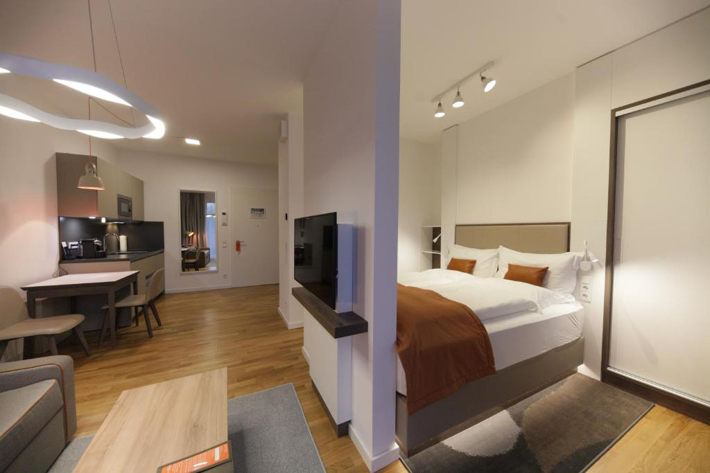
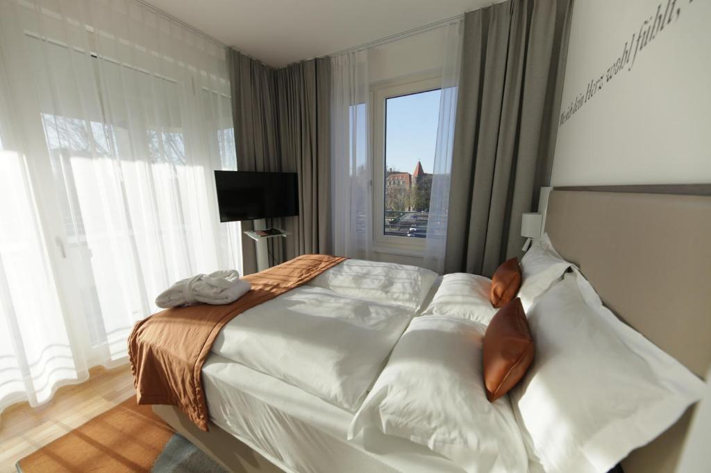
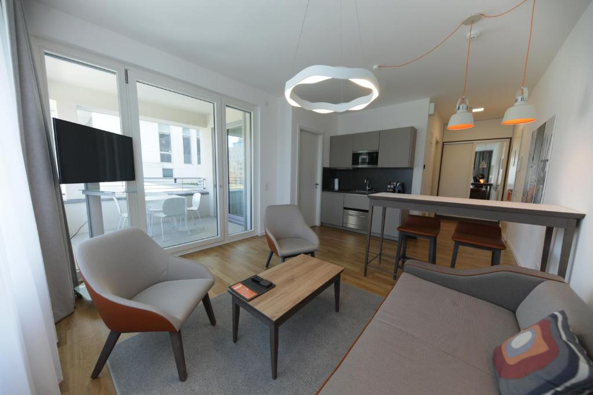
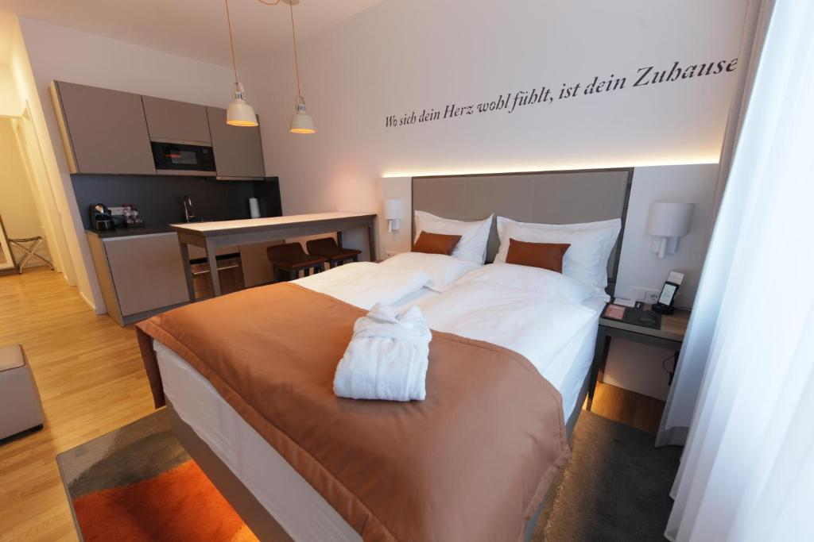
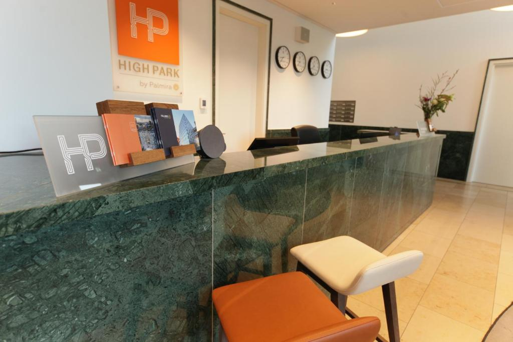
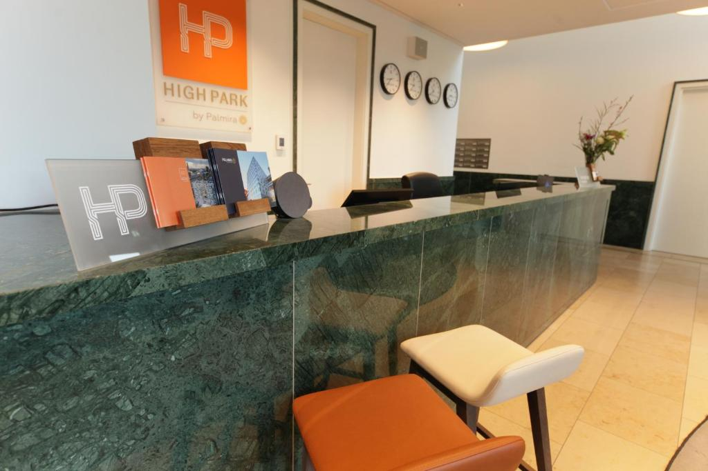
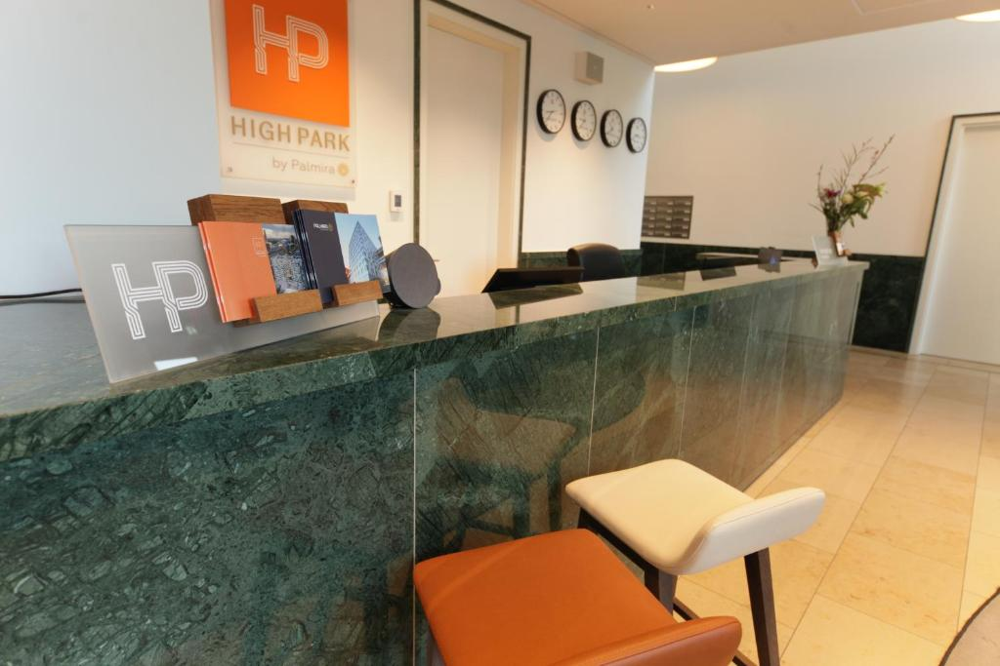
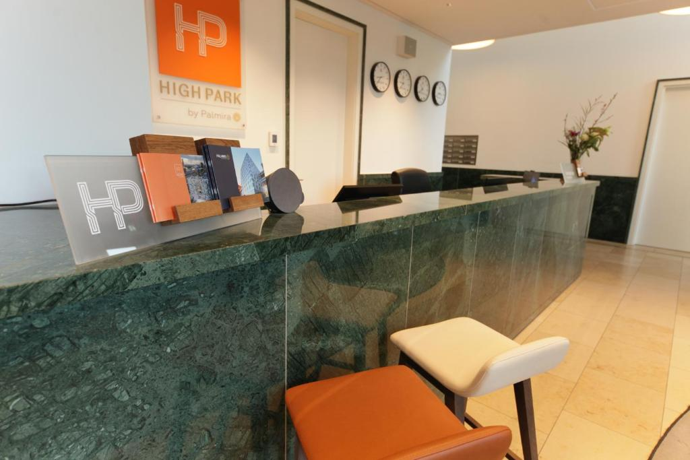

 



The HighPark Berlin am Potsdamer Platz welcomes you in the immediate vicinity of Potsdamer Platz, in Berlin's central Mitte district. Within a 15-minute walk are attractions such as the Brandenburg Gate, the Holocaust Memorial and the Topography of Terror documentation site. The HighPark Berlin am Potsdamer Platz is located on the first 3 floors of a modern building and offers high-quality suites, studios and apartments with free WiFi and additional services. All units feature ergonomic furniture, comfortable beds with orthopedic mattresses, free toiletries and a small, fully equipped kitchen. Most residential units also have a balcony. There are numerous shops, cafés and restaurants nearby. The nearby Potsdamer Platz offers excellent connections to public transport throughout Berlin, both by bus and the U2 subway line or the S-Bahn. Checkpoint Charlie is a 20-minute walk from HighPark Berlin at Potsdamer Platz. Berlin Tegel Airport is just 10 km away.
Indoor Swimming Pool
On-site Parking
Free Wi-Fi
Spa and Wellness Center
Family Rooms
Fitness Center
Airport Shuttle
Restaurant
Bar
Delicious Breakfast